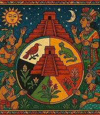
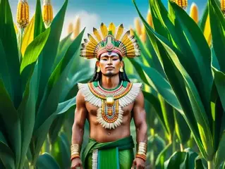

Kukulkán
La serpiente emplumada, una figura importante en distintas tradiciones mesoamericanas.

Conoce las creencias y los relatos que formaban parte de la visión del mundo de los antiguos mayas.
La serpiente emplumada, una figura importante en distintas tradiciones mesoamericanas.

Deidad relacionada con la lluvia y el agua, elementos fundamentales para la agricultura.

Deidad asociada en diversas tradiciones mayas con el conocimiento y el cielo.

Un alimento fundamental en la vida cotidiana y en relatos de origen de los pueblos mayas.
El Popol Vuh es una obra fundamental de la tradición k'iche' que reúne relatos sobre el origen del mundo, la creación de los seres humanos y las aventuras de los héroes gemelos Hunahpú e Ixbalanqué.
Sus relatos permiten conocer parte de la visión del mundo, los valores y las creencias de uno de los pueblos mayas.